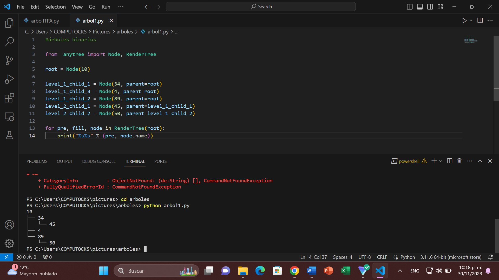
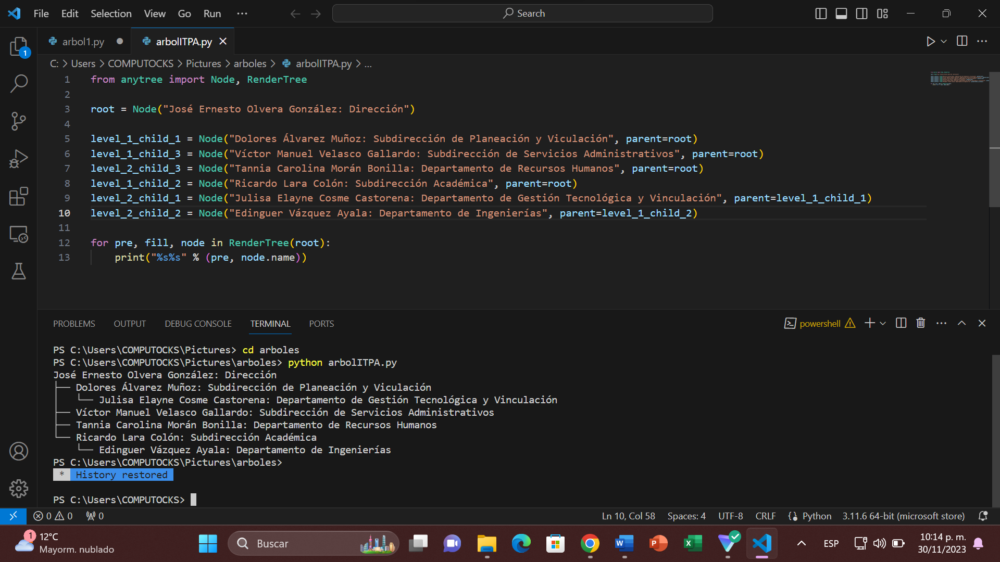

Melany Marlen Chavez Ortiz
ITIC5
¿QUE ES? Un árbol de decisión es una estructura de árbol que se utiliza en aprendizaje automático y toma de decisiones para modelar decisiones y sus posibles consecuencias, incluyendo eventos de incertidumbre. Se utiliza en problemas de clasificación y regresión. En un árbol de decisión, cada nodo interno representa una prueba en un atributo, cada rama representa el resultado de la prueba y cada nodo hoja representa una clase o un valor que se asigna después de realizar todas las pruebas. La raíz del árbol es la primera prueba que se realiza, y las ramas conducen a nodos hijos que representan pruebas subsecuentes.

A continuación, se presenta un ejemplo sencillo de un árbol conforme el organigrama de nuestra institucion:
